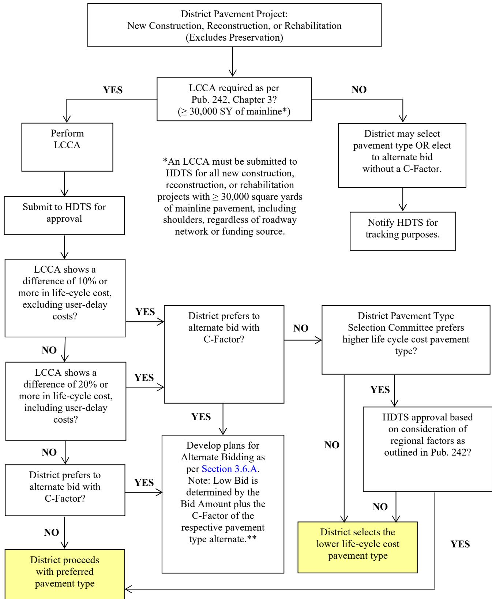

Rehabilitation
Rehabilitation is the decision mechanism that directs agencies to apply the most appropriate structural treatment to an existing pavement segment when the objective is to extend service life and improve load‑carrying or rideability without major capacity expansions, realignments, or geometric upgrades[1]. The process begins with a condition assessment of distress types, drainage, structural age and mileage out of its prescribed treatment cycle, generates feasible alternatives such as overlays, base additions, interlayers or recycling treatments, and evaluates each through a life‑cycle cost analysis that incorporates construction, maintenance and user‑delay costs to identify the lowest present‑worth option[1]. By restoring structural capacity, meeting defined performance thresholds (e.g., ride quality, drainage and patching limits) and preserving existing geometry, rehabilitation delivers a restored or enhanced pavement condition at the minimum practicable cost while guiding fund allocation among preservation, rehabilitation and reconstruction activities[2].
PennDOT publications covering “Rehabilitation” also include the following subtopics: 3R Project, Crack and Seat, Full Depth Reclamation, Overlay, Pavement Reconstruction, Rehabilitation Strategy, and Rubblization.
The Rehabilitation Strategy directs the selection of specific treatments such as the 3R Project for functional restoration or Pavement Reconstruction for full-depth renewal when structural capacity is exhausted. [1][2] Techniques like Crack and Seat, Rubblization, Full Depth Reclamation, and Overlay supply the necessary structural enhancement by addressing distress through slab fracturing, in-situ stabilization, or new surface placement to extend service life. [1][2]
Sub-concepts (7)
Purpose and decision context
Rehabilitation functions as the decision mechanism that directs agencies to choose the most suitable structural treatment for an identified pavement segment when the goal is to extend its service life and improve load‑carrying or rideability performance without undertaking major capacity expansions, realignments, or geometric upgrades. The process begins with a condition assessment that considers distress type, drainage, existing structural state, Pavement Structure Age, mileage that has fallen out of its prescribed treatment cycle, and the extent of the most recent surface work. Based on this information, feasible alternatives—such as restoration (CPR), bonded or unbonded concrete overlays, asphalt overlays, base‑layer additions, interlayers, or other recycling treatments—are generated. A life‑cycle cost analysis is then performed for each alternative over a defined analysis period, incorporating construction, maintenance, and user‑delay costs to determine the present worth of each option. The outcome identifies the overlay type, thickness, interlayer configuration, or other structural enhancement that will restore or augment load‑carrying capacity at the lowest total lifecycle expense, thereby preserving existing investment, meeting required performance levels, and guiding the allocation of Interstate Management Program funds among preservation, rehabilitation, and reconstruction activities. [1]
[1] — Ch. 1 (p. 51), Ch. 3 (pp. 64–65), Ch. 4 (pp. 82–98), Ch. 5 (pp. 115–120), Ch. 11 (pp. 190–191), Ch. 12 (pp. 210–213), Ch. 13 (pp. 214–223), Ch. 14 (p. 224)
Rehabilitation is applied when an existing pavement no longer meets required structural capacity, functional performance, ride quality, or drainage criteria due to distress such as spalling, loss of slab support, surface cracking, rutting, joint deterioration, and geometric irregularities [1][2]. The primary need addressed by rehabilitation is to restore the pavement to a satisfactory condition and extend its remaining service life without resorting to full reconstruction, thereby preserving existing geometry while delivering cost‑effective improvements in load‑bearing ability, ride comfort, and lateral support [1][2]. To satisfy this need, rehabilitation employs a suite of treatments—including overlays, shoulder upgrades, slab stabilization, patching, diamond grinding, continuous base drains, interlayers, partial recycling, concrete repairs such as dowel retrofit and slab jacking, and controlled full‑depth cracking—targeted at structural deficiencies, surface deterioration, and lateral support deficits [1][2]. Design criteria impose quantitative limits that define the problem space; for example, concrete‑shoulder joint spacing must not exceed 20 ft and minimum base depths of five inches on arterials and four inches on collectors and local roads are required when recycled materials are used [1]. When average daily traffic exceeds 5,000 vehicles or the adjusted truck‑traffic factor surpasses 500, widening into the shoulder becomes mandatory, while projects in which patching would exceed ten percent of the pavement area must undergo a cost‑effectiveness analysis comparing bonded or unbonded overlays with alternative restoration techniques [1]. For rehabilitation efforts covering at least 30,000 square yards of mainline pavement—including shoulders—life‑cycle cost analysis is required to compare present‑worth costs of initial construction, maintenance activities, and user delay across all practical alternatives from overlay to total reconstruction [1]. Surface‑level performance thresholds also guide the need for rehabilitation; deviations greater than a quarter‑inch over a twelve‑foot run must be corrected, original cross‑slope restored, and all concrete repairs completed before any diamond grinding is performed [2]. After grinding, the International Roughness Index must not exceed 70 in/mile on roads with posted speeds above 45 mph and not exceed 90 in/mile where speeds are 45 mph or less, ensuring acceptable smoothness and drainage [2]. When slab structural capacity is compromised, a controlled full‑depth cracking operation that extends across the entire width while maintaining aggregate interlock is required, followed by seating of the fractured slabs verified by visual observation of non‑movement under a roller [2]. The effectiveness of the treatment is confirmed on a test section using falling‑weight deflectometer testing to demonstrate that the average elastic modulus of the fractured concrete layer falls within specified limits [2]. By meeting these structural, functional, and smoothness thresholds, rehabilitation achieves the overarching performance goal of delivering a restored or enhanced pavement condition that satisfies quantitative design limits while minimizing future maintenance demands, traffic disruption, and life‑cycle cost [1][2].
[1] — Ch. 1 (p. 51), Ch. 2 (pp. 61–62), Ch. 3 (pp. 64–65), Ch. 4 (pp. 82–98), Ch. 5 (pp. 115–120), Ch. 6 (pp. 137–139), Ch. 11 (pp. 190–191), Ch. 12 (pp. 210–213), Ch. 13 (pp. 214–223), Ch. 14 (p. 224); [2] — SECTION 500—RIGID PAVEMENTS (pp. 404–425)
Scope and applicability
Rehabilitation is employed when the goal is to restore or preserve an existing pavement or bridge rather than create new capacity, and it can be applied across all functional classifications—including interstates, freeways, expressways, arterials, collectors, local roads, as well as mainline and ramp roadways and their associated bridges, provided that major geometric changes, realignments, or overhead‑structure modifications are not required. [1] The treatment is triggered when the asset’s condition falls below defined performance thresholds such as concrete pavements exhibiting less than ten percent patching, adequate compressive strength, acceptable air content and functional drainage, or asphalt surfaces suitable for thin overlays with less than two percent patching, good surface and subsurface drainage and no need for a structural upgrade; an Overall Pavement Index below seventy‑five percent or age that places the pavement out of its normal preservation cycle also signals rehabilitation. [1] If distress such as extensive cracking, rutting, base deficiencies or patching requirements exceeds roughly ten percent of the surface, simple preservation is no longer cost‑effective and rehabilitation supersedes it; at this point overlay options are evaluated, with bonded concrete overlays reserved for pavements in fair‑to‑excellent condition and unbonded concrete or asphalt overlays used on moderately to severely deteriorated sections to restore structural capacity and improve rideability. [1] For rigid‑pavement projects that are slated for diamond grinding, rehabilitation becomes appropriate when the existing concrete shows defects such as spalls, damaged joints, or unstable slabs; in those cases the pavement must be patched, repaired, retrofitted, stabilized, or jacked before any grinding can commence, and a ride‑quality assessment is performed after the rehabilitation step to verify compliance with smoothness and IRI thresholds. [2] The decision to pursue rehabilitation occurs during the design stage: projects involving at least thirty thousand square yards of mainline pavement require a life‑cycle cost analysis that compares rehabilitation with alternatives such as total reconstruction, while any paved length exceeding five hundred continuous feet on divided roadways (or one thousand feet on undivided roads or bridge approaches) mandates a DARWin pavement design analysis; shorter sections may still be subject to the analysis if directed by the District Pavement Management Engineer. [1] Quantities for rehabilitation items are field‑verified in the final design phase, typically within the year preceding project advertisement, and the same design can be leveraged across adjacent projects when underlying pavement characteristics remain unchanged. [1] Rehabilitation is therefore scheduled after annual STAMPP surveys identify excessive distress but before the asset reaches the end of its functional life, at which point full reconstruction would become necessary; in programs such as the Interstate Management Program, rehabilitation projects are prioritized alongside preservation and major reconstruction during the biennial program‑update cycle based on field views, condition data, project phasing and design‑funding status. [1]
The table below lists the typical maintenance frequencies for concrete pavement activities.
| Activity | Frequency |
|---|---|
| Joint sealing | 5 years |
| Concrete patching | Year 15, 20, and 25 |
| Diamond Grinding | 15 to 20 years |
| Asphalt Overlay | 20 to 30 years |
Rows list maintenance activities for concrete pavements. Columns give the frequency or timing for each activity.
Source: Pavement Policy Manual (Publication 242, May 2015 Edition, Change No. 10), untitled table, p. 220. [1]
[1] — Ch. 1 (p. 51), Ch. 3 (p. 65), Ch. 4 (pp. 82–98), Ch. 5 (pp. 115–120), Ch. 6 (pp. 134–137), Ch. 12 (pp. 211–213), Ch. 13 (pp. 214–223); [2] — SECTION 500—RIGID PAVEMENTS (pp. 404–405)
Rehabilitation is limited to modest extensions of service life or modest structural and functional gains without altering fundamental roadway characteristics, and becomes unsuitable when the project seeks a substantive increase in traffic capacity, major realignment, or significant geometric upgrades; under those conditions reconstruction or new construction should be pursued. [1] Likewise, if the existing pavement is already in fair‑to‑excellent condition and no structural upgrade is required, a preservation or preventive‑maintenance program is more cost‑effective than rehabilitation. [1] When average daily traffic exceeds five thousand vehicles or truck‑adjusted traffic exceeds five hundred, the widening that sometimes accompanies rehabilitation may be insufficient, indicating that capacity improvements beyond a simple overlay are needed and a different treatment such as reconstruction should be considered. [1] If more than ten percent of the pavement surface requires patching—excluding existing concrete patches in good condition—a life‑cycle cost analysis must be performed and, when the analysis shows higher costs, alternatives such as full‑depth reconstruction, milling, or heater planing are preferred. [1] Thin asphalt overlays on non‑Interstate facilities are only viable when the underlying pavement is structurally sound, requires less than two percent patching, provides good surface drainage (or can be upgraded to it), and does not need a structural upgrade; failure to meet any of these criteria eliminates the overlay option and directs designers toward unbonded overlays, rubblizing with a thicker overlay, or full reconstruction. [1] Bonded jointed plain concrete pavement overlays are inappropriate for asphalt or composite pavements that exhibit significant structural deterioration, unstable support, stripping of the asphalt, or unresolved drainage problems; in such cases unbonded overlays, cracking and seating, rubblizing, or complete reconstruction are preferred. [1] Rehabilitation segments longer than five hundred continuous feet on divided roadways or one thousand feet on undivided roadways require a full DARWin pavement design rather than a minimal rehabilitation approach, and when the existing composite pavement far exceeds minimum thickness requirements or contains elements such as crack‑and‑seat that cannot be reasonably replicated, a detailed DARWin analysis must also be performed. [1] When a pavement has already failed or become functionally obsolete, resurfacing or overlay cannot restore performance, making total reconstruction necessary; similarly, if a structural‑overlay index or comparable life‑cycle cost analysis indicates that another treatment yields the lowest total cost over the design horizon, rehabilitation must be excluded. [1] For bridge assets, good‑condition bridges are directed toward repairs and preventive maintenance, while rehabilitation is reserved for elements classified as poor or deficient; when condition data, age, or prior treatments indicate that rehabilitation would not economically restore service life, replacement becomes the preferred alternative. [1] Full‑depth concrete fracturing as a rehabilitation method is also unsuitable when site conditions prevent safe cracking, such as when culverts, cross‑pipes, or utility sleeves lie within ten feet horizontally and ten feet vertically of the slab, or when the pavement approaches bridges, tunnels, or other structures within forty feet. [2] It must likewise be avoided if the subgrade could liquefy under sonic vibratory equipment, if the required fracturing and seating equipment cannot meet force, impact‑control, or roller‑mass specifications, or if temperature limits for falling weight deflectometer testing are exceeded (below 45 °F, above 90 °F, or when the surface is frozen). [2] In those circumstances the specification calls for alternative actions such as full‑depth sawcutting into smaller segments and conventional repair rather than fracture‑and‑seat rehabilitation. [2]
[1] — Ch. 1 (p. 51), Ch. 2 (pp. 61–62), Ch. 3 (p. 65), Ch. 4 (pp. 82–98), Ch. 5 (pp. 115–120), Ch. 6 (pp. 134–139), Ch. 12 (pp. 211–213), Ch. 13 (pp. 218–223); [2] — SECTION 500—RIGID PAVEMENTS (pp. 423–425)
Information needs
Rehabilitation planning begins with a comprehensive inventory of the pavement’s present condition, which includes measuring and tabulating the exact quantities of visible distress such as cracking, rutting, edge deterioration, raveling, joint spalling and faulting, as well as recording cross‑slope values at each test location together with the maximum depth of depression or misalignment observed. [1][2] When the amount of patching required exceeds ten percent of the pavement area a cost‑effectiveness analysis is mandated, whereas if less than two percent requires patching the structure may be deemed sound. [1] Core samples are extracted near deteriorated joints and at random locations to assess subbase or subgrade quality, and falling‑weight deflectometer testing supplies the effective modulus of subgrade reaction or resilient modulus needed for structural design; a continuous one‑thousand‑foot test section must produce an average elastic modulus of the fractured concrete layer within the prescribed range before production fracturing proceeds. [1][2] Serviceability levels at the beginning and end of the analysis horizon together with a defined reliability level complete the condition profile, while longitudinal roughness expressed as an International Roughness Index is measured pre‑rehabilitation to establish post‑treatment ride‑quality targets that are limited to seventy inches per mile for facilities with posted speeds above forty‑five miles per hour and ninety inches per mile for lower speeds. [1][2] Site information records the pavement type (rigid or flexible), its age, surface and structural ages, most recent treatment, shoulder material and condition, drainage functionality, subgrade stability expressed by CBR values, and any special geometric features such as steep grades, tight curvature or areas of heavy turning where out‑to‑out paving is recommended; precise locations of curbs, bridge decks, barriers, joints and any excluded zones are identified with a minimum clearance of two feet from existing curb, bridge or roadway barriers, and all culverts, cross‑pipes and utility sleeves within ten feet horizontally or vertically are mapped and utility owners consulted to confirm acceptable cracking limits. [1][2] When reclaimed asphalt concrete obtained from milling operations is available it may be used for shoulder base courses, and any unsuitable subgrade encountered when employing sonic vibratory equipment must be replaced at no additional cost to the department. [1][2] Economic inputs comprise estimated unit costs for all pavement materials, projected initial construction costs, anticipated maintenance activities, user‑delay costs and a discount rate applied in a life‑cycle cost analysis; projects larger than thirty thousand square yards require a present‑worth LCCA that compares total construction, maintenance and delay costs across alternatives, and the contractor is responsible for repairing damaged utilities, drainage facilities, bridge approaches and any required subgrade replacement without extra charge. [1][2] Traffic data essential to design include current average daily traffic counts, with volumes greater than five thousand vehicles or an ADT‑truck‑bus‑recreational vehicle component exceeding five hundred prompting shoulder widening, detailed classifications, projected eighteen‑kip equivalent single axle loads for the analysis period and roughness indices; traffic patterns also dictate grinding direction for safety and enforce the IRI limits tied to posted speed, and after concrete fracturing vehicular or construction traffic is prohibited until the surface has been sealed. [1][2] Environmental considerations focus on climate‑related distress such as freeze‑thaw cycles, moisture intrusion risk and the adequacy of surface and subsurface drainage, requiring correction of any drainage deficiencies before overlay placement; roller operations for seating are prohibited when moisture levels exceed the threshold set by the Representative, and sonic vibration may not be used where it could induce subgrade liquefaction. [1][2] Stakeholder input is incorporated throughout the process, with municipal or local government preferences, industry participation and district priorities influencing pavement type selection, construction sequencing and policy reviews; a designated Representative receives all cross‑slope and roughness records, designates lot extents, approves compliance before payment, determines wet‑condition status for roller operations and validates utility owner approvals. [1][2]
[1] — Ch. 2 (pp. 61–62), Ch. 3 (pp. 64–70), Ch. 4 (pp. 82–98), Ch. 5 (pp. 115–120), Ch. 6 (pp. 134–137), Ch. 11 (pp. 190–191), Ch. 13 (pp. 218–223), Ch. 14 (p. 224); [2] — SECTION 500—RIGID PAVEMENTS (pp. 404–425)
Rehabilitation decisions must be based on information that is demonstrably accurate, current, and as complete as practicable. Accuracy is achieved by quantifying every observable distress, tabulating exact percentages, and confirming material conditions through both destructive (core) and non‑destructive testing; the data set is only considered complete when it includes these measurements together with results of required tests and a record of the existing pavement section. Currency is maintained through several mechanisms: policies governing rehabilitation are reviewed at least every two years to incorporate new technologies and cost data, the discount rate used in life‑cycle cost analyses is updated each January, annual automated condition surveys (STAMPP) are supplemented by ongoing quality‑assurance activities, and field verification of all estimated items must be performed during the final design phase no later than one year before a project is advertised. Completeness requires that every feasible treatment—whether an asphalt or concrete overlay, total reconstruction, or other alternative—be entered into the life‑cycle cost analysis unless a documented justification excludes it, and that major considerations such as pavement condition, rehabilitatability, drainage functionality, subgrade effects, and viable alternatives are addressed. A specific completeness trigger is the 10 % patching threshold; if the required patching exceeds this value (excluding sound existing patches), a separate cost‑effectiveness analysis must be conducted. Bridge rehabilitation information follows analogous standards: inspection data must comply with the FHWA Recording and Coding Guide, inspections occur at least every two years, and completeness is pursued to the extent feasible for inclusion in the interstate preservation program. Finally, because management system records represent only the condition at the time of the last survey and traffic counts may be several years old, designers are required to supplement database information with up‑to‑date field observations to ensure that the rehabilitation plan reflects the true present state of the pavement. [1]
[1] — Ch. 3 (p. 65), Ch. 4 (pp. 82–84), Ch. 6 (pp. 136–137), Ch. 13 (pp. 220–223), Ch. 14 (p. 224)
Alternatives
In a rehabilitation project engineers evaluate a spectrum of feasible alternatives that range from modest surface‑restoration actions to full structural enhancements and must include both rigid (concrete) and flexible (asphalt) treatments [1]. The least intensive options are non‑structural restorations that repair age‑related cracking without adding appreciable thickness, such as crack‑and‑seat operations, limited surface material placement, patching, base repair, and other minor works intended to eliminate top‑down surface distress [1]. At the next level, structural enhancements increase load‑carrying capacity by adding thickness and include a full structural asphalt overlay, a concrete overlay (bonded or unbonded), an unbonded crack‑and‑seat overlay combined with base repair and leveling, and overlays placed after rubblization of existing layers [1]. Thin Superpave courses of 6.3 mm or 9.5 mm fine‑grade asphalt may be used provided they meet a minimum thickness of one‑and‑a‑half inches unless special approval is obtained, and any thin overlay must respect the pavement depth limits set out in design tables [1]. Reclaimed asphalt concrete can be incorporated either as a recycled base for Type 6 family shoulders or as an asphalt surface course for Type 7 shoulders, with cold‑mixed recycled bases required to be at least five inches thick on arterials and four inches on collectors and local roads [1]. Shoulder rehabilitation options span new concrete shoulders with joint spacing limited to twenty feet, various Type 6, 6‑F, 6‑S or 6‑SP shoulders where excavation or scarifying is needed, Type 7 shoulders that require only cleaning and patching, and Type 1, 1‑F, 1‑S or 1‑SP shoulders adjacent to flexible pavements; when widening extends into the shoulder the width is governed by traffic volume—two feet of widening for average daily traffic over five thousand vehicles per day or adjusted truck traffic over five hundred, otherwise one foot [1]. Supplemental treatments such as a safety edge, geotextile fabric, fiberglass mesh grids, or composite reinforcing grids may be added to address specific distress types, climate conditions, or moisture concerns [1]. For existing Portland cement concrete pavements the feasible measures expand to include conventional concrete‑pavement restoration (patching, slab stabilization or jacking, grinding, joint repair, drainage adjustments, guide‑rail work and dowel‑bar retrofits), bonded concrete overlays, unbonded concrete overlays, crack‑and‑seat overlays with base repair, cracking/breaking and seating of slabs, rubblizing followed by reconstruction on a rubblized base, or complete removal and replacement of the concrete structure [1]. When a project is subject to Alternate Pavement Type Bidding, the alternatives to be compared are typically a concrete pavement design built on either an asphalt‑treated or cement‑treated permeable base course versus an all‑asphalt design employing Superpave wearing, binder and base courses, each meeting identical geometric standards and service‑life expectations [1]. The guides require that at least two structural alternatives—one rigid and one flexible—be analyzed with the DARWin software before any total reconstruction is contemplated, ensuring life‑cycle cost analysis considers all practical alternatives from simple overlays to full reconstruction using either pavement type [1]. In addition to these broader options, when planning a rigid‑pavement rehabilitation the feasible alternatives to compare are the specific concrete repair treatments—patching, spall repair, dowel retrofit, slab stabilization and slab jacking—which must be completed before any diamond‑grinding work can begin [2]. The selected repair alternative should be evaluated by measuring ride quality with IRI both before and after grinding, ensuring that the post‑rehab IRI does not exceed 70 in/mi on roads posted above 45 mph or 90 in/mi on roads at 45 mph or lower, while also meeting required cross‑slope and longitudinal roughness tolerances [2].
[1] — Ch. 2 (pp. 61–62), Ch. 3 (pp. 65–79), Ch. 4 (pp. 82–98), Ch. 5 (pp. 115–120), Ch. 6 (pp. 134–139), Ch. 12 (pp. 211–213), Ch. 13 (pp. 220–223); [2] — SECTION 500—RIGID PAVEMENTS (pp. 404–405)
The Crack‑and‑Seat rehabilitation option requires controlled full‑depth fracturing with variable‑force equipment, removal of any overlying asphalt, sawcutting slabs up to 20 feet long, and seating the broken concrete using a minimum 50‑ton pneumatic roller making at least three passes over each spot; after seating, subbase No. 2A is placed beneath the fractured slab and flexible‑base material patches the top, traffic is prohibited until an asphalt leveling course with tack coat is applied within one week, and repeated falling‑weight deflectometer testing of 1,000‑foot sections verifies modulus compliance. The Break‑and‑Seat option follows the same preparatory steps but mandates sawcutting to a depth of plus or minus 1 inch of two‑thirds of slab thickness and requires at least five roller passes, while still using the 50‑ton roller, observing the same utility protection limits, traffic restrictions, and post‑seating overlay timing; both methods share material needs (roller, subbase, flexible base), time for test sections and FWD verification, moderate disruption due to traffic bans, risk controls against shattering, soil liquefaction, and utility damage, and future maintenance limited to the timely asphalt overlay. [2]
[2] — SECTION 500—RIGID PAVEMENTS (pp. 423–425)
Decision criteria
Rehabilitation decisions are anchored primarily on two interrelated criteria—life‑cycle cost and performance. Life‑cycle cost analysis requires that the present worth of construction, maintenance and user‑delay costs be computed for each alternative; the alternative with the lowest total present worth is selected. Performance considerations demand that alternatives provide comparable levels of service, as reflected by condition indices, structural capacity, drainage functionality and the required initial and terminal serviceability targets. All viable options must be equivalent in the level of service they deliver, and contract unit costs for materials are kept consistent. When patching exceeds ten percent of the pavement surface, a cost‑effectiveness comparison is mandated before proceeding. The low‑bid determination combines the bid amount with the C‑Factor derived from the life‑cycle cost analysis, ensuring that the chosen treatment meets the required condition at the minimum practicable cost. Although some asset‑management procedures initially screen assets for safety and functional deficiencies, the ultimate selection of a rehabilitation alternative remains governed by cost and performance considerations; factors such as schedule, sustainability, accessibility or broader public impact are not presented as controlling criteria in the referenced guidance. [1]
The following figure illustrates how these cost and performance considerations guide the selection of rehabilitation alternatives.

The flowchart begins with a District Pavement Project involving new construction, reconstruction, or rehabilitation. The first decision is whether LCCA is required per Pub. 242 Chapter 3 for projects with at least 30,000 square yards of mainline pavement. If no, the district may select a pavement type or elect to alternate bid without a C-Factor and notify HDTS.
If yes, the process requires performing LCCA and submitting it to HDTS for approval. A decision follows based on whether the LCCA shows a difference of 10% or more in life-cycle cost excluding user-delay costs. If no, a second check determines if there is a difference of 20% or more including user-delay costs. If yes at either threshold, the district decides if it prefers to alternate bid with a C-Factor; if so, plans are developed per Section 3.6.A where low bid includes the C-Factor.
If the LCCA shows less than a 10% difference excluding delays, or if the district does not prefer an alternate bid with a C-Factor, the District Pavement Type Selection Committee decides whether to prefer a higher life-cycle cost pavement type. If yes, HDTS approval is sought based on regional factors; if approved, the lower life-cycle cost type is selected. If no, the district selects the lower life-cycle cost pavement type.
Text description of this figure
The flowchart begins with a District Pavement Project involving new construction, reconstruction, or rehabilitation. The first decision is whether LCCA is required per Pub. 242 Chapter 3 for projects with at least 30,000 square yards of mainline pavement. If no, the district may select a pavement type or elect to alternate bid without a C-Factor and notify HDTS.
If yes, the process requires performing LCCA and submitting it to HDTS for approval. A decision follows based on whether the LCCA shows a difference of 10% or more in life-cycle cost excluding user-delay costs. If no, a second check determines if there is a difference of 20% or more including user-delay costs. If yes at either threshold, the district decides if it prefers to alternate bid with a C-Factor; if so, plans are developed per Section 3.6.A where low bid includes the C-Factor.
If the LCCA shows less than a 10% difference excluding delays, or if the district does not prefer an alternate bid with a C-Factor, the District Pavement Type Selection Committee decides whether to prefer a higher life-cycle cost pavement type. If yes, HDTS approval is sought based on regional factors; if approved, the lower life-cycle cost type is selected. If no, the district selects the lower life-cycle cost pavement type.
The figure displays a decision flowchart titled “LCCA/Alternate Pavement Type Bidding Flow Chart” that outlines the procedural steps for selecting pavement types based on life-cycle cost analysis (LCCA). The process begins by determining if an LCCA is required, then proceeds through a series of conditional checks regarding the percentage difference in life-cycle costs to decide whether to proceed with alternate bidding or select a specific pavement type.
[1] — Ch. 3 (pp. 65–79), Ch. 4 (pp. 82–84), Ch. 6 (pp. 136–137), Ch. 11 (pp. 190–191), Ch. 13 (pp. 214–223)
Across the guides, rehabilitation prioritization begins with a systematic appraisal of pavement condition that quantifies visible distress, core test results and other nondestructive‑test outputs to generate an objective condition score. That condition score is combined with structural indices, age of the layer and the elapsed time since the last treatment, while traffic exposure expressed as equivalent single axle loads (ESALs) further influences the rank order. Sections that exhibit a verified loss of skid resistance receive additional weighting on prioritization forms, reflecting safety considerations. When the quantitative assessment indicates that concrete patching will be required on more than ten percent of a section—excluding patches already in good condition—a cost‑effectiveness analysis is triggered to compare extensive patching with alternative treatments. Life‑cycle cost (LCC) remains the overriding criterion; the alternative that yields the lowest LCC is preferred even when other criteria such as condition scores are favorable for different options. After an initial list based on condition, age and traffic loading is produced, district‑level considerations—including fit with the proposed treatment type, schedule feasibility, deliverability, available funding and phasing constraints—are applied to refine the ranking. In concrete rehabilitation contracts, however, the primary performance metric shifts to the amount of textured surface actually placed because payment is made for the entire completed area regardless of the number of passes required. Ride‑quality improvements such as NGCS texturing receive no separate incentive and therefore are weighted lower than the quantity‑based metric in those contracts. Consequently, when competing objectives are evaluated for concrete rehabilitation projects, the weighting favors completion of the specified surface area over additional ride‑quality benefits. The combined approach thus balances objective condition and traffic data with cost effectiveness for most pavements, while recognizing that contract payment structures can re‑prioritize criteria toward quantity of work in specific concrete rehabilitation contexts. [1][2]
[1] — Ch. 4 (pp. 82–84), Ch. 13 (pp. 218–223); [2] — SECTION 500—RIGID PAVEMENTS (p. 399)
Analysis methods and tools
Rehabilitation decisions are guided by an integrated suite of evaluation tools that convert measured pavement conditions into appropriate treatment alternatives. [1] The process begins with a comprehensive inventory in which quantities of visible distress such as cracking, rutting, joint faulting and other surface defects are measured and tabulated to produce a condition rating for each pavement section. [1] Both destructive methods, including coring near deteriorated joints and at random locations, and a range of non‑destructive techniques—deflection testing, faulting measurements, ground‑penetrating radar, friction and roughness surveys, MIRA scans, MIT‑Scan 2, T2 assessments, and tensile bond testing—are employed to characterize the existing structure and subgrade. [1] In addition, longitudinal ride quality is quantified by an International Roughness Index survey before work and re‑measured after treatment, with acceptance limits of 70 in/mi for facilities posted above 45 mph and 90 in/mi for those at or below that speed. [2] Cross‑slope and depression profiles are recorded at each test location and must satisfy contractual tolerances, providing a detailed slope profile used as a performance metric. [2] The collected distress data feed an asset‑management model that forecasts pavement condition for at least a ten‑year horizon (PennDOT uses a twelve‑year plan) and supports long‑range planning, financial programming and formal risk assessment. [1] A network‑wide summary metric, the Overall Pavement Index, reports the percentage of mileage in Excellent or Good condition when it exceeds 85 % and the percentage in Poor condition when it falls below 75 %. [1] Annual automated pavement condition surveys conducted under the STAMPP program provide the distress data that are entered into treatment matrices linked to predefined cycle charts, which identify when interventions such as base repair, asphalt overlay, concrete overlay or full reconstruction are warranted. [1] Structural capacity is further evaluated with Falling Weight Deflectometer measurements on representative sections—typically a 1,000‑foot test segment for rigid pavements—and the resulting surface deflections are back‑calculated using approved software such as MODULUS or EVERCALC to obtain the elastic modulus of the fractured concrete layer; the average modulus must lie within specified limits. [2][1] Traffic loading expressed as Equivalent Single Axle Loads is also considered in prioritizing projects. [1] Economic evaluation relies on a Life‑Cycle Cost Analysis that must be prepared for any new construction, reconstruction or rehabilitation project exceeding the 30,000 square‑yard mainline threshold; the analysis calculates the present worth of initial construction costs, scheduled maintenance activities and user‑delay costs over an identical analysis period. [1] Future costs are discounted using a rate derived from the five‑year rolling average of the 30‑Year Real Interest Rate on Treasury securities, with inflation excluded, and a C‑Factor is obtained by summing the present worth of future maintenance to adjust each bid; the low bid is determined as the sum of the bid amount plus its C‑Factor. [1] All feasible alternatives—including asphalt or concrete overlays and full reconstruction—are compared on the basis of lowest life‑cycle cost, which drives project selection rather than condition ratings alone. [1] Cost‑benefit analyses are performed at both the project and network levels, and the outcomes are tracked through life‑cycle performance monitoring. [1] Risk‑based asset management criteria embodied in DARWin pavement design analyses for projects meeting length thresholds ensure that rehabilitation actions achieve a state of good repair at the minimum practicable cost. [1]
[1] — Ch. 3 (pp. 64–79), Ch. 4 (pp. 82–84), Ch. 6 (pp. 134–136), Ch. 11 (pp. 190–191), Ch. 13 (pp. 214–221); [2] — SECTION 500—RIGID PAVEMENTS (pp. 404–425)
Rehabilitation analyses rely on a network of interrelated assumptions that shape both engineering design and life‑cycle cost outcomes. The guides assume current traffic conditions are known; when average daily traffic exceeds five thousand vehicles or the adjusted truck‑traffic factor is greater than five hundred, widening is extended two feet onto the shoulder, otherwise only one foot is provided [1]. It is further assumed that reclaimed asphalt concrete obtained from milling can serve as a base course with a minimum thickness of five inches on arterial sections and four inches on collectors or local roads, and that concrete shoulder joints will not be spaced more than twenty feet apart [1]. Designers also presume the existing pavement structure is essentially sound—typically less than two percent of the surface requires patching—and that surface and subsurface drainage are adequate or will be upgraded to meet this condition [1]. Core samples taken during design are expected to verify an acceptable bond between old and new layers, while measured quantities of visible distress, core results, and nondestructive tests are treated as representative of overall pavement condition, including concrete percent patching, compressive strength and air content [1]. A decision threshold is set at ten percent patching; exceeding this level triggers a supplemental cost‑effectiveness analysis [1]. Quantity estimates are deliberately inflated to accommodate additional deterioration that may develop between the design field view and actual construction, and all estimated item quantities must be verified in the final design phase [1]. When geotechnical data are unavailable, a resilient modulus is assumed for preliminary designs with the understanding that updated soil stiffness or traffic counts will trigger redesign if conditions change [1]. The model further assumes that the pavement was in optimum condition after its most recent rehabilitation and that subsequent deterioration proceeds uniformly across the limits of the last construction [1]. Life‑cycle cost calculations rest on several further assumptions: each pavement type alternative is presumed to maintain equivalent performance throughout the analysis period, inflation is excluded from cost projections, and future maintenance and user‑delay costs are discounted using a rate derived from the five‑year rolling average of real Treasury yields; input parameters such as total 18‑kip ESALs, effective modulus of subgrade reaction or resilient modulus, initial and terminal serviceability, reliability targets, and estimated unit costs for materials are held constant across the project area [1]. Asset data assumptions include that pavement surface age and structure age reliably indicate when a segment has moved out of its prescribed treatment cycle, and that the Overall Pavement Index accurately reflects condition when it exceeds eighty‑five for excellent or good status and falls below seventy‑five for poor status; automated condition surveys and associated treatment matrices are presumed to capture the full spectrum of distress on each roadway segment, and the RMS snapshot taken at the time of survey is treated as a faithful representation of current conditions even though traffic volumes may be several years old and layers added by surface treatments can be omitted from the pavement history [1]. Additional assumptions pertain to field testing equipment: fracturing equipment is expected to deliver a controllable variable force without causing extensive surface spalling, punching holes, or shattering the concrete, and sonic vibratory tools are assumed not to liquefy the subgrade; falling weight deflectometer testing is presumed feasible only when pavement temperature is between 45 °F and 90 °F and the surface is not frozen [2]. Uncertainties stem from possible variations in equipment performance, subgrade stability, weather conditions such as wetness or extreme temperatures, and the accuracy of FWD measurements; any deviation can cause measured elastic modulus to fall outside prescribed ranges and trigger adjustments to breaking patterns [2]. Collectively, these assumptions introduce uncertainties related to future traffic growth, soil modulus, cost forecasts, hidden moisture intrusion, localized subgrade weakness, incomplete or outdated asset data, and potential equipment or environmental constraints during testing; such uncertainties can cause projected rehabilitation mileage, timing, treatment selection, and economic performance to differ from segment‑level forecasts when applied at the project level [1][2].
[1] — Ch. 2 (pp. 61–62), Ch. 3 (pp. 65–70), Ch. 4 (pp. 82–84), Ch. 5 (pp. 115–120), Ch. 6 (pp. 134–137), Ch. 13 (pp. 218–223), Ch. 14 (p. 224); [2] — SECTION 500—RIGID PAVEMENTS (pp. 423–425)
Stakeholders and constraints
Rehabilitation decisions start at the district level where each local district compiles a list of candidate projects and submits it to PennDOT’s Asset Management Division for statewide prioritization [1]. The Asset Management Division, together with Central Project Development and Management staff, evaluates each project’s suitability, schedule, funding availability, and deliverability, producing the final rankings and approvals for rehabilitation treatment [1]. Technical input is gathered from traffic analyses that calculate average daily traffic and adjusted truck‑bus‑RV counts; when current ADT exceeds 5,000 or the adjusted count exceeds 500 the widening structure must be extended two feet into the shoulder, a detail that may be paved with the same material at the discretion of the District Executive [1]. Performance histories of comparable pavements, life‑cycle cost analyses required for any rehabilitation exceeding 30,000 square yards of mainline pavement, municipal preferences, seasonal construction constraints, and condition data supplied by the Bureau of Maintenance Operations also feed the decision process [1]. Stakeholders, including industry representatives, are invited to comment during the biennial policy review conducted by Highway Design & Technical Services [1]. For projects funded through the Interstate Management program, the Interstate Steering Committee provides primary input and must concur on any adjustment; any change over one million dollars is further reviewed by PennDOT’s Program Management Committee [1]. The District Pavement Management Engineer or Pavement Manager is consulted whenever design alterations are contemplated [1]. The highway engineer then synthesizes economic, performance, and stakeholder inputs and records a recommended pavement structure on Form D‑4332 [1]. This recommendation is reviewed by the highway administrator, who issues the final approval in accordance with Chapter 6 procedures [1]. The district prepares the complete design package and accompanying life‑cycle cost analysis and forwards it to the Bureau of Design and Delivery for review; the chief of the Highway Design & Technical Division grants a preliminary sign‑off and subsequently provides final approval, or routes the package to the Federal Highway Administration when federal oversight applies [1]. For short‑section rehabilitations, the District Executive records approval on the project file while the HDD Chief also conducts preliminary and final approvals of the design and cost analysis [1]. When alternate‑pavement bidding is used, the same sequence—district submission, BODD review, HDTD chief approval—is followed [1]. In addition to agency inputs, the contractor must submit a pavement fracturing plan, equipment list, and any test‑section results before work begins; the Department Representative reviews those submissions against criteria such as acceptable fracture patterns and elastic modulus ranges and issues the approval that allows construction to proceed or mandates revisions [2]. The Department Representative also requires field testing results—such as FWD data—to be provided within seven calendar days and does not permit further fracturing until those results are approved [2].
[1] — Ch. 2 (pp. 61–62), Ch. 3 (pp. 64–79), Ch. 6 (pp. 134–137), Ch. 13 (pp. 214–223); [2] — SECTION 500—RIGID PAVEMENTS (pp. 423–425)
Rehabilitation projects are classified as Resurfacing, Restoration and Rehabilitation (3R) work and must adhere to roadway design criteria that limit the scope to extending service life or improving structural and functional capacity without major capacity upgrades, realignments or geometric changes. All federal‑aid and fully state‑funded projects are required to follow the Pavement Preservation Guidelines in addition to the specifications of Publication 13 Design Manual Part 2. Concrete shoulder joint spacing may not exceed twenty feet, and shoulder widening is tied to traffic levels, with a two‑foot extension mandated when average daily traffic exceeds five thousand vehicles or the truck‑adjusted count exceeds five hundred; lower volumes allow only one foot of widening. The type of shoulder required depends on road classification, with Type 6, 6‑F, 6‑S or 6‑SP shoulders prescribed for interstates and other limited‑access arterials, while collectors and local roads may use alternative types, and reclaimed asphalt concrete from milling operations is permissible for shoulder base courses. A Life‑Cycle Cost Analysis must be prepared for any rehabilitation that involves at least thirty thousand square yards of mainline pavement, evaluating all practical alternatives—including asphalt or concrete structural overlays and total reconstruction—using the prescribed discount rate and HDTS spreadsheet, and any excluded alternative requires justification. Design standards dictate that bonded or unbonded concrete overlays follow Chapter 10, full remove‑and‑replace reconstructions follow Chapter 8, and diamond grinding is permitted only as described in Publication 408 Section 514, with each overlay required to provide continuous base drainage, joint cleaning and sealing, slab stabilization and appropriate shoulder treatment. The Alternate Pavement Type Bidding policy obliges the completed pavement designs and LCCA to be submitted for review, obtain preliminary approval from the HDTD Chief, and retain the selected pavement type after award; typical sections must conform to RC standards, DM‑2 specifications and Publication 242, and any deviation triggers a waiver process through the Board of Directors. Condition assessment further limits treatment choice: if total concrete patching exceeds ten percent (excluding sound patches) a cost‑effectiveness analysis is required; a Falling Weight Deflectometer test on existing PCCP must be performed before overlay design, and bonded overlays are limited to good‑to‑fair structures with stable subgrade and functional drainage while unbonded overlays may address moderate to severe deterioration. Asphalt overlay thickness is determined by the AASHTO Design Method in Chapter 10; on interstates thin Superpave wearing‑course overlays must be at least one‑and‑a‑half inches thick and receive PDAU approval, whereas on non‑interstate facilities they are permitted only when the existing surface is asphalt, the pavement is structurally sound with less than two percent patching, drainage is adequate or will be improved, no structural upgrade is needed, the binder meets PG 64‑E‑22 specifications for a 6.3 mm wearing course and placement depths follow prescribed tables. All designs must be prepared in accordance with the 1993 AASHTO Pavement Design Procedures as amended by the department and executed through AASHTOWare® DARWin® 3.01; a DARWin analysis is mandatory when the continuous length of rehabilitation exceeds five hundred feet on divided roadways or one thousand feet on undivided roads, and even when not required minimum‑thickness criteria must be satisfied. The design package, potentially including an LCCA, must be submitted for Central Office approval within one year after Design Field View approval for moderate‑complexity projects and within two years for the most complex projects; the District Executive approves completed forms and any deviation from the original design requires written concurrence from the approving authority (FHWA, BODD or the District) after consultation with the District Pavement Management Engineer/Manager. Supporting cost data must be provided, estimated rehabilitation items field‑verified during the final design phase no later than one year before advertisement, and certified PME/PMs must complete a QA review before approval; deviations from Publication 242 trigger a waiver to BODD, while Federal‑aid projects require FHWA approval unless waived. Section 119(e) of Title 23 U.S.C. obligates the state to maintain a risk‑based asset‑management plan for the National Highway System, and agency policies require that rehabilitation decisions fit within defined budgets, resource limits and performance‑based investment criteria; the Interstate Management Program restricts funding to preservation, rehabilitation or reconstruction of existing interstate roadways and bridges, with stand‑alone capacity‑adding projects permissible only through a collaborative MPO/RPO process and program adjustments exceeding one million dollars reviewed by the Interstate Steering Committee. MAP‑21, the FAST Act and FHWA regulations (23 CFR Parts 515, 667, 490) mandate that any rehabilitation be performed under an asset‑management plan that meets condition targets, employs the lowest practicable life‑cycle cost and adheres to minimum bridge and pavement management standards. Treatment‑cycle policies use pavement surface age, structure age and the Overall Pavement Index—requiring less than seventy‑five percent of mileage in poor condition—to trigger rehabilitation; Maintenance Functional Codes applied using data from the State’s Roadway Management System provide condition ratings, historical performance and traffic data that determine eligibility and minimum intervention level, but because the RMS may contain outdated records a field verification step is required before final design. Funding rules also shape method selection for rigid‑pavement rehabilitation: contractors are paid for the entire textured surface regardless of whether diamond grinding is performed in a single‑pass or two‑pass operation, and there is no ride‑quality incentive for NGCS texturing, making techniques that rely on such incentives uneconomical. Diamond grinding itself is constrained by Section 514.3, which limits the process to a power‑driven self‑propelled machine meeting defined smoothness tolerances, prohibits overlaps greater than two inches and requires a minimum distance of two feet from curbs, bridge barriers or roadway barriers; all concrete repairs—including patching, spall repair, dowel retrofit, slab stabilization or jacking—must be completed before grinding, and the work must restore the original cross‑slope, correcting any deviation greater than one‑quarter inch over twelve‑foot intervals. Longitudinal roughness must be measured before and after grinding in accordance with Section 507.3, and the post‑grind International Roughness Index may not exceed seventy inches per mile on routes with speed limits above forty‑five miles per hour or ninety inches per mile on slower roads; compliance with these thresholds is a condition for payment. When fracture‑based rehabilitation methods such as break‑and‑seat or crack‑and‑seat are considered, a pavement fracturing plan and equipment list must be submitted and approved by the Representative before work begins, the equipment must satisfy strict force‑control and roller specifications, and fracture operations are prohibited within ten feet of utility sleeves, culverts, cross pipes or the bottom of the slab and within forty feet of bridge approaches. A minimum one‑thousand‑foot test section must be constructed and subjected to Falling Weight Deflectometer testing in accordance with AASHTO T256 and ASTM D4694–D4695, with testing prohibited when the surface is frozen or air temperature falls below forty‑five degrees Fahrenheit or exceeds ninety degrees Fahrenheit; the fractured layer’s average elastic modulus must fall within the range specified in Table A before full production can proceed. Bridge rehabilitation projects are governed by Publication 15M Design Manual Part 4, which specifies a one‑hundred‑year service life design approach and requires compliance with FHWA’s Recording and Coding Guide and the Bridge Safety Inspection Manual (Publication 238); candidate bridge projects are prioritized using structural and pavement condition data, age, last treatment, schedule, deliverability and available funds. [1][2]
[1] — Ch. 1 (p. 51), Ch. 2 (pp. 61–62), Ch. 3 (pp. 65–79), Ch. 4 (pp. 82–98), Ch. 5 (pp. 115–120), Ch. 6 (pp. 134–139), Ch. 11 (pp. 190–191), Ch. 13 (pp. 214–223), Ch. 14 (p. 224); [2] — SECTION 500—RIGID PAVEMENTS (pp. 399–425)
Timing and implementation
The decision to rehabilitate a pavement is made after the systematic evaluation of its condition shows that preservation measures are no longer adequate and that additional structural capacity is required [1]. This evaluation begins with the annual pavement‑condition inventory, which incorporates the State of the Interstate report produced each spring and feeds the data into a project‑level Pavement Asset Management System for analysis [1]. Using measured distress quantities, treatment matrices, cycle charts, and structure‑age forecasts, sections that have passed preservation thresholds or are projected to fall out of their prescribed treatment cycles are flagged for further consideration [1]. Once a segment is identified, the preliminary‑engineering stage commences, during which quantified condition data, drainage functionality, distress causes, feasible alternatives such as restoration or overlays, and life‑cycle cost analyses are reviewed [1]. The rehabilitation decision is then refined during final design, where all estimated rehabilitation items are field‑verified within the year preceding project advertisement and the District Pavement Management Engineer/Manager is consulted to document and approve any design changes [1]. If bridge structures are present, the most recent bridge inspection data—collected at least every two years—are incorporated into the priority ranking before finalizing the rehabilitation selection [1]. In parallel, the guides require that no field work commence until a complete fracture plan and equipment list have been submitted and formally approved [2]. Approval includes establishing at least one 1,000‑foot test section whose fracturing pattern is verified by falling‑weight deflectometer testing, and only after this test section receives representative acceptance may production fracturing proceed [2]. Consequently, the commitment to rehabilitate is considered finalized once the plan and test‑section results are approved, which must occur before any breaking or seating operations start [2].
[1] — Ch. 4 (pp. 82–84), Ch. 6 (pp. 136–137), Ch. 11 (pp. 190–191), Ch. 13 (pp. 218–223); [2] — SECTION 500—RIGID PAVEMENTS (pp. 423–425)
Rehabilitation is initiated when systematic monitoring or analysis shows that a roadway or bridge has exceeded predefined traffic, structural, condition‑based, or temporal limits set by the guides [1]. Specific traffic thresholds such as an average daily traffic greater than five thousand vehicles or an adjusted truck‑traffic count exceeding five hundred trigger design requirements to extend the widening structure two feet into the shoulder, while lower volumes permit only a one‑foot extension or omission with an appropriate shoulder type [1]. Projects that involve thirty thousand square yards or more of mainline pavement, including shoulders, must be accompanied by a life‑cycle cost analysis reviewed by Highway Design Technical Services, whose policies are updated on a two‑year cycle [1]. Field observations act as additional triggers: the appearance of spalling, excessive deflection, failed transverse joints, slab movement, faulting, rocking or pumping observed during inspection obligates patching, spall repair, slab stabilization or jacking before any overlay can be placed, and existing joints must be cleaned and resealed prior to overlay work [1]. When concrete patching would cover more than ten percent of the surface area—excluding patches already in good condition—a cost‑effectiveness analysis is required, and if the distress is primarily load‑related structural improvements become part of the rehabilitation scope [1]. Structural deficiencies, surface deterioration or unacceptable rideability on Portland cement concrete pavement also call for an overlay; a falling‑weight deflectometer test confirming inadequate capacity further requires slab stabilization, and subsurface drainage problems demand provision of adequate subdrainage [1]. For thin asphalt overlays on non‑Interstate routes the existing pavement must be structurally sound with less than two percent requiring patching, possess good surface drainage (or be upgraded to it), need no structural upgrade, meet a minimum thickness of one and a half inches and satisfy applicable ADT limits [1]. Length thresholds act as design triggers: any rehabilitation segment longer than five hundred continuous feet on divided roadways or one thousand feet on undivided roads requires a DARWin pavement‑design analysis [1]. If the design year used in an approved design or life‑cycle cost analysis shifts by more than three years, a new design and, where required, a new LCCA must be prepared [1]. A change in pavement condition that necessitates a fresh field view forces collection of updated traffic data and a redesign, and all estimated rehabilitation items must be field‑verified within one year prior to advertising the project [1]. Network‑level monitoring provides further triggers: each spring the State of the Interstate report compiles condition data, and when deficiencies are identified within the geographic extent defined by the last resurfacing, rehabilitation or reconstruction, a rehabilitation recommendation is entered into the system‑wide plan [1]; pavement structure age compared with prescribed treatment cycles flags segments that are out‑of‑cycle or projected to become so, including interchange ramps, while Overall Pavement Index thresholds—poor condition mileage falling below seventy‑five percent and excellent/good condition dropping beneath eighty‑five percent—require districts to identify those miles for possible rehabilitation [1]. Annual pavement‑condition surveys feed treatment matrices; when structural deficiencies exceed what preservation can address or required patching exceeds ten percent of the surface, the matrix assigns the segment to rehabilitation rather than preservation [1]. Bridge assets are screened through inspection and appraisal data; age, elapsed time since the last treatment and structural condition metrics that exceed predefined limits place a bridge on a priority list for rehabilitation instead of replacement [1]. Concrete‑pavement defects that could impair subsequent diamond‑grinding operations—such as spalling, needed patching, dowel bar deficiencies, slab instability or the need for slab jacking—must be repaired before grinding can commence [2]. Cross‑slope measurements exceeding a deviation of one quarter inch over any twelve‑foot segment are deemed unacceptable and must be corrected prior to proceeding with rehabilitation activities [2]. Surface smoothness after grinding is monitored by the International Roughness Index; values exceeding seventy inches per mile on roadways with posted speeds above forty‑five miles per hour, or exceeding ninety inches per mile where the speed limit is forty‑five miles per hour or less, trigger remedial work before payment can be authorized [2]. During fracture‑and‑recycle operations, if the fracturing process fails to achieve expected results, work must cease immediately and an alternate action plan submitted to the Representative; likewise, falling‑weight deflectometer testing that shows the average elastic modulus of the fractured concrete layer outside specified limits requires a change in breaking pattern or re‑fracture [2]. If two consecutive one‑thousand‑foot test sections fail to meet the elastic‑modulus criteria, the contractor must establish a new one‑thousand‑foot test section to determine an optimal fracture pattern [2]. All falling‑weight deflectometer results must be provided to the Representative within seven calendar days, and any delay beyond this deadline prevents resumption of work until approval is obtained [2]. Finally, once the fractured pavement has been seated, the final asphalt overlay must be placed no later than one week thereafter [2].
[1] — Ch. 2 (pp. 61–62), Ch. 3 (pp. 65–70), Ch. 4 (pp. 82–98), Ch. 5 (pp. 115–120), Ch. 6 (pp. 134–137), Ch. 13 (pp. 218–223); [2] — SECTION 500—RIGID PAVEMENTS (pp. 404–425)
The rehabilitation process begins with a condition assessment that relies on non‑destructive testing equipment such as deflection rigs and ground‑penetrating radar, which can be obtained at no cost through the FHWA Mobile Concrete Technology Center loan program or by requesting FHWA assistance. Standard construction crews are then mobilized together with the material inputs required for each treatment phase, including slab stabilization, slabjacking, partial‑depth repairs, load‑transfer retrofits, cross‑stitching, full‑depth patching, base drain installation, diamond grinding or grooving, shoulder reconstruction, and joint cleaning and sealing. In addition to labor and materials, the project must be supported by a complete set of pavement‑design documentation mandated by PennDOT, comprising a cover letter, Form D‑4332, typical section drawings, location map, DARWin printouts and calculations, traffic summaries, geotechnical reports, temporary construction cross‑over designs, life‑cycle cost analysis outputs, and the existing pavement history. The design analysis itself is performed with the DARWin software, after which all required forms are submitted to the District Executive for approval and coordinated with the District Pavement Management Engineer or Pavement Manager to obtain written concurrence before any work order is issued. Once approvals are in place, the prescribed construction sequence commences with slab stabilization and proceeds through each subsequent treatment step until joint rehabilitation is completed. Prior to diamond grinding, all concrete repairs—including patching, spall repair, dowel retrofit, slab stabilization, and slab jacking—must be finished, and a minimum one‑thousand‑foot test section is established to verify the process. The test section is first subjected to wet fracturing or pre‑fracture sawcutting using variable‑force impact equipment, followed by full‑depth cracking, after which the fractured slab is seated with a pneumatic tire roller of at least fifty tons applying three passes for the Crack and Seat method or five passes for the Break and Seat method. Falling‑weight deflectometer testing is conducted at intervals not greater than fifty feet during seating, and the results must be submitted within seven calendar days before production fracturing can proceed. After the slab has been seated, continuous slurry removal, joint resealing, surface cleaning, tack‑coating, and placement of an asphalt leveling course are required to be completed within one week provided ambient temperatures remain between forty‑five and ninety degrees Fahrenheit and utility protection measures are observed. Diamond grinding is then performed with a power‑driven, self‑propelled machine equipped with diamond blades capable of meeting the specified smoothness and texture tolerances, while ensuring that overlap does not exceed two inches and that grinding stays at least two feet from curbs, bridges, or barriers. Post‑grind International Roughness Index measurements are taken to confirm that the IRI does not exceed seventy inches per mile for posted speeds above forty‑five miles per hour or ninety inches per mile for speeds of forty‑five miles per hour or less before traffic is reopened. The overall schedule is constrained by PennDOT policy, which requires preservation‑type rehabilitations to be let no later than fifteen months after the Pavement Type Selection approval date. For moderate‑complexity projects, pavement design approval must be achieved within one year of the Design Field View (or environmental) approval and at least six months before the Final Design Office Meeting, while the most complex projects may extend to two years but still require the same six‑month buffer. All estimated rehabilitation quantities are field‑verified during the final design phase, a verification that must occur within the year preceding project advertisement. [1][2]
[1] — Ch. 4 (pp. 82–84), Ch. 6 (pp. 134–137); [2] — SECTION 500—RIGID PAVEMENTS (pp. 404–425)
Outcomes and follow-up
Success for a pavement rehabilitation project is achieved when the treated segment regains the functional and structural performance required by the applicable design criteria, thereby extending its service life without resorting to major capacity upgrades or geometric changes. The restored pavement must satisfy defined condition thresholds, including limiting visible distress that requires patching to roughly ten percent of the surface, meeting specified concrete compressive strength, air content and durability values, and maintaining effective drainage. For overlay treatments, success is demonstrated by completing all prescribed preparation steps—full‑depth patching, slab stabilization, subdrainage, and pre‑rehabilitation falling‑weight deflectometer testing—and by confirming through post‑rehabilitation FWD measurements that the structural capacity has been recovered, whether the overlay is bonded or unbonded. When concrete surface rehabilitation involves diamond grinding and texturing, success also requires that the repaired surface meet all geometric tolerances, with cross‑slope deviations not exceeding a quarter‑inch over twelve feet as measured at 100‑foot intervals along the work length. The texture must consist of parallel grooves whose widths fall between 0.09 and 0.13 in, land‑area widths between 0.060 and 0.110 in, and a groove depth of approximately one‑sixteenth inch. Ride quality is verified by measuring longitudinal roughness before and after grinding; the International Roughness Index must be no greater than 70 in/mi on roads with posted speeds above 45 mph and no greater than 90 in/mi where speeds are 45 mph or less. For crack‑and‑seat or break‑and‑seat operations, all induced cracks must be visible on the top surface, the roller must make at least three passes for the Crack‑and‑Seat method or five passes for the Break‑and‑Seat method, and visual inspection must show no vertical deflection of the substrate after seating. The final quantitative verification for both overlay and textured‑concrete treatments is a falling‑weight‑deflectometer test over a representative 1,000‑foot section; the average elastic modulus of the rehabilitated layer must fall within the range specified in the applicable design tables, confirming that the required structural capacity has been achieved. Economically, success is measured by a life‑cycle cost analysis that demonstrates the selected rehabilitation alternative yields the lowest total present‑worth cost—including initial construction, scheduled maintenance, and user‑delay costs—when compared with all viable options, and this analysis must be documented for projects of at least 30 000 square yards. Procedurally, success requires compliance with the 1993 AASHTO pavement design procedures as amended, submission and approval of all structural calculations, traffic and geotechnical information, and the LCCA within prescribed timeframes, field verification of estimated rehabilitation quantities before advertisement, and awarding the contract within fifteen months of pavement‑type selection. At the network level, a successful rehabilitation moves the rehabilitated mileage out of the “out‑of‑cycle” classification and contributes to an overall pavement index in which at least eighty‑five percent of miles are rated Excellent or Good while less than seventy‑five percent are Poor, as confirmed by annual automated condition surveys and FWD data that show reduced cracking and rutting. Finally, contractor payment is based on the total square yards of textured surface completed, so meeting the quantity, geometric, texture, roughness, and structural criteria constitutes successful performance. [1][2]
[1] — Ch. 1 (p. 51), Ch. 3 (pp. 64–65), Ch. 4 (pp. 82–98), Ch. 6 (pp. 134–136), Ch. 11 (pp. 190–191), Ch. 12 (pp. 210–211), Ch. 13 (pp. 214–223); [2] — SECTION 500—RIGID PAVEMENTS (pp. 399–425)
Monitoring of rehabilitation outcomes begins early in the project lifecycle and continues through the post‑construction period, with initial tracking established when an alternate pavement type is identified in ECMS and flagged for inclusion on the monthly Planned Six‑Month Letting Schedule [1]. During the final design phase, estimated quantities of rehabilitation items are field‑verified and compiled together with structural calculations, traffic and geotechnical reports, existing pavement history from RMS, and life‑cycle cost analyses to create a formal submission package that must be routed to the approving authority and reviewed by the District Pavement Management Engineer or Pavement Manager [1]. Prior to any rehabilitation work, the contractor is required to submit a detailed pavement‑fracturing plan and equipment list for approval, and at least one 1,000‑foot test section must be established so that the optimal breaking pattern can be identified [2]. Construction‑stage monitoring includes continuous evaluation of the fractured surface by performing falling‑weight deflectometer (FWD) tests at intervals of fifty feet or less using a 9,000‑pound drop weight, with results compiled and submitted to the Representative within seven calendar days; if any measured elastic modulus falls outside the specified range, the breaking pattern is revised and the testing cycle repeats [2]. After the rehabilitation layer is placed, ride quality is assessed before diamond grinding by measuring longitudinal surface roughness and cross‑slope deviations that exceed a ¼‑inch in 12 ft tolerance, with these measurements logged for later comparison [2]. Following grinding, the International Roughness Index (IRI) is re‑measured and must not exceed 70 in/mi on roads with posted speeds over 45 mph or 90 in/mi where speeds are 45 mph or less; the post‑grinding IRI report and cross‑slope documentation are submitted to confirm compliance and determine payment eligibility [2]. Upon completion of construction, post‑treatment condition data—including updated segment ratings, traffic exposure, and treatment history—are entered into RMS and verified by field inspections or targeted test surveys so that the as‑built state is accurately captured [1]. Because RMS reflects conditions only at the time of survey, a follow‑up survey is scheduled in subsequent years to refresh the dataset, allowing engineers to determine whether the rehabilitation met its design criteria and to provide empirical evidence for selecting treatments on comparable segments [1]. Bridge rehabilitations are tracked similarly, with inspections at least once every two years entered into BMS2 together with age, prior interventions, and work descriptions, feeding priority lists for preservation, rehabilitation, or reconstruction [1]. All performance information—construction costs, traffic volumes, inventory, maintenance actions, and post‑rehabilitation condition—is stored in a central database and analyzed with programs such as PAMS; established performance measures are statistically analysed and regular reports document life‑cycle cost outcomes, enabling refinements to treatment selection and budgeting for future projects [1]. The Interstate Management program reinforces this feedback loop by requiring Pavement and Bridge Condition Performance Measures, an inventory of asset condition, and a multi‑year forecast covering at least ten years, with any identified cost savings returned to the IM contingency reserve and reallocated through ISC approval to address the most appropriate statewide need [1]. Each spring, the Bureau of Maintenance Operations produces a State of the Interstate report that analyzes pavement‑condition data for every segment defined by its most recent resurfacing, rehabilitation, or reconstruction, records condition at completion, tracks uniform deterioration over time, and incorporates performance‑measure inputs while project selection is driven by achieving the lowest life‑cycle cost; these documented results feed system‑wide analyses that identify appropriate treatments, estimate required funding, and shape district Interstate plans [1]. Ongoing monitoring also includes assessment of mileage that falls “out of cycle” using treatment‑cycle criteria and Overall Pavement Index percentages for Excellent/Good versus Poor condition, with every interim maintenance or preservation activity recorded in RMS and explicitly noted in the District Interstate plan when it does not address the underlying structural issue that prompted rehabilitation [1]. Annual Automated Pavement Condition Surveys (STAMPP) capture distress indicators such as cracking and rutting; the resulting data populate condition‑treatment matrices that classify segments for rehabilitation when thresholds are exceeded, while site‑specific problems not captured by STAMPP are noted during field views and continuously verified through quality‑assurance reviews by BOMO to improve data reliability and inform future rehabilitation priorities [1].
[1] — Ch. 3 (pp. 77–79), Ch. 6 (pp. 134–137), Ch. 11 (pp. 190–191), Ch. 13 (pp. 214–223), Ch. 14 (p. 224); [2] — SECTION 500—RIGID PAVEMENTS (pp. 404–425)
Related Concepts
- 3R Project
- Crack and Seat
- Full Depth Reclamation
- Overlay
- Pavement Reconstruction
- Rehabilitation Strategy
- Rubblization
References
- Pennsylvania Department of Transportation, "Pavement Policy Manual," Publication 242, May 2015 Edition, Change No. 10, 2025. [Online]. Available: https://www.pa.gov/content/dam/copapwp-pagov/en/penndot/documents/public/pubsforms/publications/pub-242/pub%20242%20change%2010.pdf
- Pennsylvania Department of Transportation, "Publication 408/2026 Specifications," Change No. 1, 2026. [Online]. Available: https://www.pa.gov/content/dam/copapwp-pagov/en/penndot/documents/public/pubsforms/publications/pub_408/408_2026/408_2026_1/408_2026_1.pdf